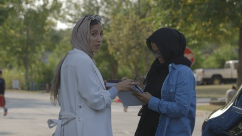

About the film
In THE FEELING OF BEING WATCHED, filmmaker Assia Boundaoui follows the trail of her neighbors’ suspicion that their community just outside Chicago has been under surveillance for over a decade. While investigating their experiences, Boundaoui uncovers tens of thousands of pages of FBI documents that prove her Muslim community was indeed the subject of one of the largest counter-terrorism investigations ever conducted in the U.S. before 9/11, code-named “Operation Vulgar Betrayal.”
At the festival
- 2018 Friday, October 12, 2018 · 6:00 PM · Naval Heritage CenterPost-screening discussion with director Assia Boundaoui and producer Jessica Devaney.
More films on these topics
 The Accidental SpyAnthony Wonke2024 · 98 min
The Accidental SpyAnthony Wonke2024 · 98 min- Phantom ParrotKate Stonehill2023 · 82 min
 The Black SwanMads Brügger2025 · 90 min
The Black SwanMads Brügger2025 · 90 min BombshellBen Loeterman2025 · 82 min
BombshellBen Loeterman2025 · 82 min Cover-UpLaura Poitras, Mark Obenhaus2025 · 117 min
Cover-UpLaura Poitras, Mark Obenhaus2025 · 117 min- IncidentBill Morrison2023 · 30 min